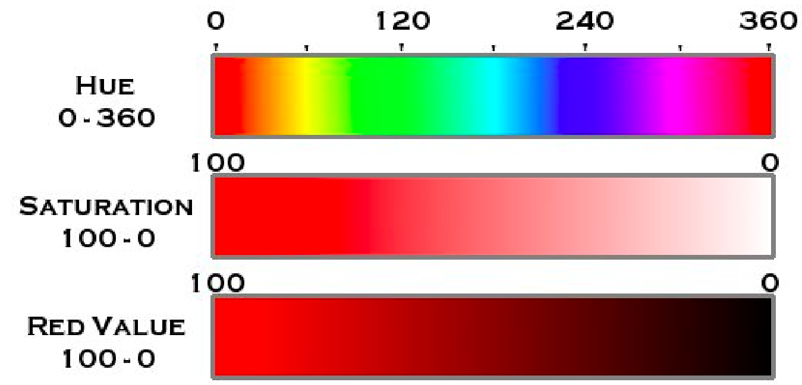
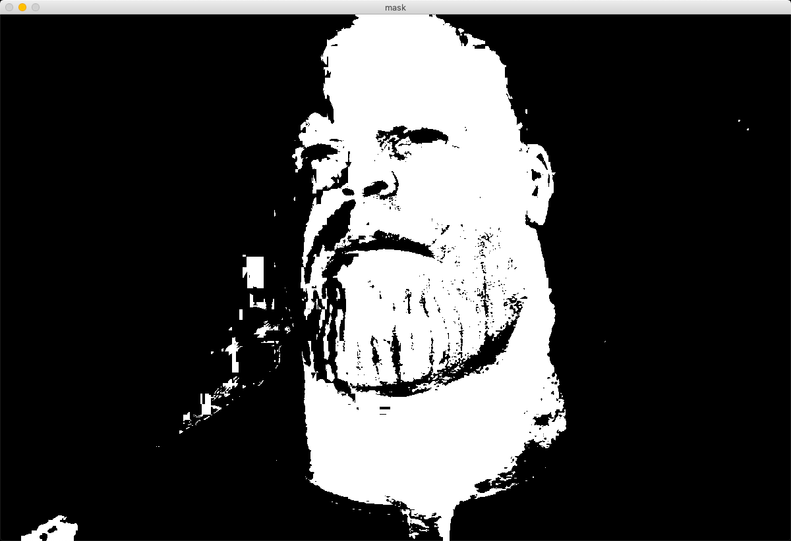
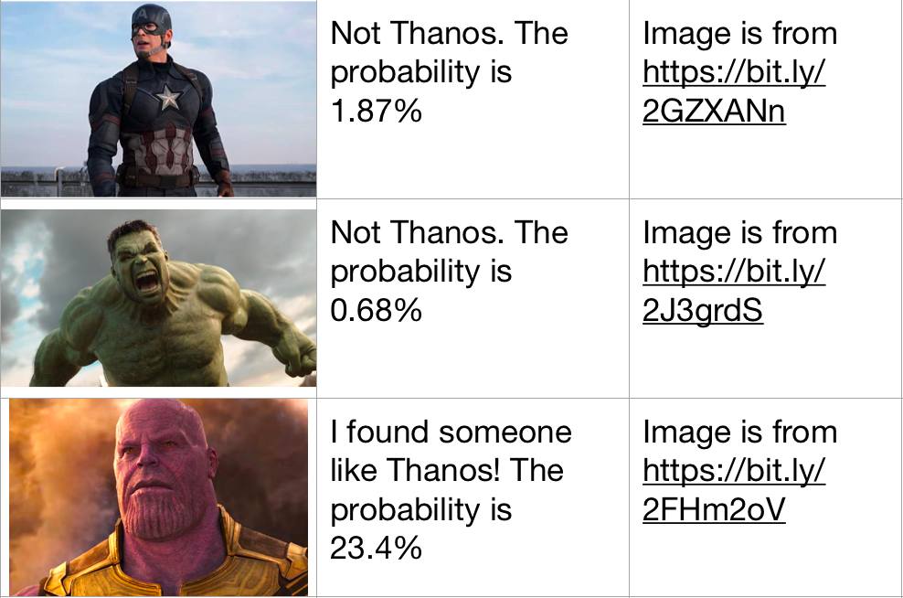

Hi everyone, Tony called me and said that he needs a new tech to find Thanos. Thanos escaped to another planet after destroying the half of living creatures. Stark’s drones are flying to other planets and taking pictures but they don’t have a program to analyze pics and detect Thanos. Tony wanted us to do this job for him.
We will use the mad titan’s purple color to detect him. We’ll use python language and openCV library.
 We will use this photo for tests.
We will use this photo for tests.
Let’s start!
Be sure that you have Python, OpenCV and Numpy installed to your computer.
First of all, we need to import libraries to our code:
import cv2
import numpy as np
We need a pipeline to get photos, calculate their chance to be Thanos and give an answer to us. We will have a function to run the job.
def find_thanos(photo_name):
# We will write everything inside this function.
def run():
while True:
photo_name = input()
if photo_name == “”:
break
else:
find_thanos(photo_name)
run()
We need to load the image using its name on your computer.
def find_thanos(photo_name):
# This line of code is used to load image
image = cv2.imread(photo_name)
Then, we will change the colorspace. A colorspace is the order of colors. There are a few spaces that you can use for different situations. I think HSV is the easiest if you are working with OpenCV. There are other options that you can try. See all options.
def find_thanos(photo_name):
image = cv2.imread(photo_name)
# This is a function to convert colorspaces in openCV
image = cv2.cvtColor(image, cv2.COLOR_BGR2HSV)
We made this operation to easily detect purple color of Thanos. Now, we can find out which pixels are purple. HSV colorspace means Hue, Saturation and Value.
 Click here for photo credit.{kind=link}
Hue is the angle value. It determines the color. Saturation is a slider between white and color. Value is a slider between black and the color. The max values are 180, 255 and 255 for python instead of 360, 100 and 100.
We will determine two HSV values as boundaries and OpenCV will detect where in the image, the pixel values are between our boundaries. We mostly find these values by trying.
# HSV boundaries for purple color
lower_bound = np.array([40, 70, 70])
upper_bound = np.array([180, 255, 255])
Now, we will use these boundaries to find purple color. It will create a mask. A mask is a special image in openCV. For our case, if color is between boundaries, the pixel will be white. Otherwise, it will be black.
mask = cv2.inRange(image, lower_bound, upper_bound)
Let’s see if our code can detect the mad titan’s color or not.
# Show the images to the user.
cv2.imshow(“mask”, mask)
# Stop the code. Wait for the user to press the space button.
cv2.waitKey(0)
There is the mask of our test photo:
 Purple masked image of Thanos.{kind=link}
It is pretty good üëç
But how can machines understand that this is Thanos? Let’s add some code. We will find the ratio of white pixels to all. If the ratio of purple color increases, then the probability of being Thanos increases.
# Find how many pixels are in the image
num_of_pixels = mask.shape[0] * mask.shape[1]
# Calculate the number of white ones.
num_of_white = np.sum(mask == 255)
# Calculate the ratio
ratio = num_of_white / num_of_pixels
Then we can use a simple if statement to print the data to Avengers when the probability is high.
if ratio > 0.2:
print("I found someone like Thanos! The probability is", ratio*100, "%")
else:
print("Not Thanos. The probability is", ratio*100, "%”)
It looks like our code works! There are some test results.
{kind=link}
Thanks for reading. Goodbye.